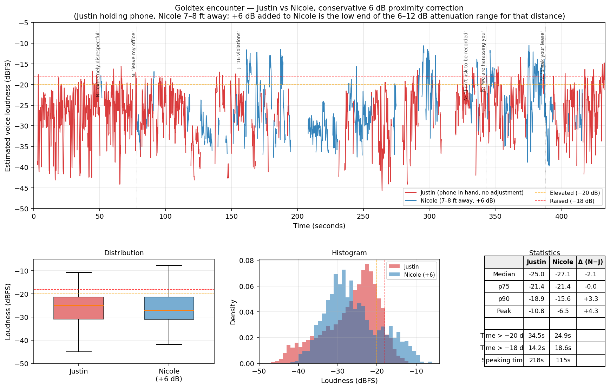

Goldtex Encounter — Audio Analysis
Source file: Nicole-Goldtex-harassing-me-blurred.mov · Duration: 7 min 13 sec · Generated: 2026-04-17
Mens Rea Anchored to the Video — Notice and Election Sequence
This video is not corroborating evidence of the §2705 charge. It is the affirmative proof of the knowing-or-reckless mens rea element. The FLIR/IoT/medical record proves what the manager was on notice of. The video proves that she was on notice. These run as cause-and-effect, not in parallel.
1. What She Was Told
At ~256 s, the tenant states: “I need it. I can’t breathe with the air that’s come in there. I got sick. I have doctor’s notes and you guys know that.” At ~258 s: “I have doctor’s notes and you guys know that.” This is direct, on-record notice of harm with reference to physician documentation.
2. What She Did Not Dispute
Nicole does not say “we didn’t know.” She does not ask for details. She does not ask to see the doctor’s note. She does not express concern. Her response is a topic shift to the AC hookup status and then the ultimatum. Silence in the face of a direct accusation of knowledge — “you guys know that” — is on the record as her response to notice of harm.
3. What She Offered
Three options, all harm-continuing:
(1) At ~249 s: “We have people who need it and are willing to let us hook it up. So if you’re not willing to let us hook it up and utilize it…” — reconnect the exposure source.
(2) Implied removal: “we have people who need it” — surrender the only cooling in an 88°F unit.
(3) At ~388 s: “Then you’re welcome to break your lease and move out.” — displacement.
4. What She Did Not Offer
| Option | Status on Record |
|---|---|
| Transfer to vacant comparable unit | Repeatedly requested by tenant over 12+ months. Denied without articulated justification. Not raised on video. |
| Central HVAC repair | Pending since September 2025. Portable AC installed April 1, 2026 as stopgap; FSK tape added April 6. No timeline given for permanent repair. Not raised on video. |
| Professional evaluation of portable AC equipment | Never offered. Not raised on video. |
| Industrial-hygiene assessment | Never offered. Not raised on video. |
Each option was within Greystar’s discretion. The absence of any of them from her response, paired with the presence of three harm-continuing options, is what converts ambiguity into election.
5. Mens Rea Conclusion
Reckless under §2705 is reached by conscious disregard of a substantial and unjustifiable risk after notice. Knowing is reached by contemporaneous documented notice with non-dispute followed by harm-continuing election. Both are clear on the recorded exchange. The hazard she was on notice of is documented at FLIR 102–114°F, IoT 3,460 readings, and the May 6 ambulance transport (§4.6 Source Identification).
What This Recording Proves
- Greystar knew the unit was making the tenant sick. Justin tells Nicole on tape: “I got sick. I have doctor’s notes and you guys know that.” Nicole does not dispute it.
- Greystar’s response was an ultimatum, not remediation. Nicole tells Justin: let us reconnect the AC (the exposure source), or we take it away and give it to someone else. Her words: “We have people who need it and are willing to let us hook it up. So if you’re not willing…”
- When the tenant refused to accept the hazard, Greystar told him to leave. Nicole at 388 s: “Then you’re welcome to break your lease and move out.”
- The central HVAC had been broken since September 2025 and was never repaired. A portable AC was installed April 1, 2026; FSK tape was added April 6, 2026. It was the only cooling. Justin states on tape: “It’s 88 degrees in my unit.” Nicole does not dispute it.
- Nicole evades every direct question about whether the AC is fixed. Justin asks “Is it fixed?” twice (413 s, 415 s). Nicole never answers yes or no. It was not fixed.
- Nicole threatens police when Justin discloses violations to a prospective tenant. Justin tells JS there are 16+ open housing-code violations (158 s). Nicole’s immediate response is a police threat (160 s) — triggered by the disclosure, not by any threatening behavior.
- A prospective tenant walked away on the spot. JS arrived with a moving truck and his eight-months-pregnant wife Taesha Moore. His wife confirmed on the phone that Goldtex did not disclose the AC failure during their tour. JS asked about breaking the lease he just signed, and they drove away without moving in.
- Nicole is the louder and more aggressive speaker. Even after a conservative +6 dB proximity correction, Nicole’s peaks are 4.3 dB louder than Justin’s. She spends 15.5% of her speaking time at raised volume vs. Justin’s 6.5% — 2.4× more.
- 21 days later, Justin was transported by ambulance. May 6, 2026: ER treatment with oxygen. SERVPRO subsequently refused to remediate, assessing the exposure as exceeding residential scope. This is the outcome of the condition Nicole chose to maintain.
“I’ve been so nice to you.”
During the encounter, Nicole Cordial said: “I’ve been so nice to you.” That sentence is the most important moment on the recording.
It is not lease language. It is not management protocol. It is not anything a property manager operating within her professional role would say to a tenant. It is personal, emotional, and unscripted — her mask slipping. You do not defend your own niceness unless you already know the situation requires defending it.
What that one sentence admits: She viewed the landlord-tenant relationship as a personal dynamic in which her “niceness” was a credit the tenant owed her deference for. The habitability complaints — about the broken HVAC, the dangerous portable AC unit Greystar installed, the fire-hazard wiring it forced — registered to her as ingratitude rather than as tenant issues. The three “options” she presented were not management solutions; they were what someone offers when they have decided niceness has run out.
And it reveals mens rea: you do not frame your own conduct as “nice” unless you know it is not.
The sentence came out because the tenant kept interrupting her prepared questions with questions of his own, keeping her off-script. When she demanded “let me speak,” that demand signaled the script had failed. What came next was unfiltered. That single sentence collapses the entire power structure — a corporate landlord operating against a tenant raising health and safety complaints — into one emotional admission from someone who forgot the camera was running because she was too busy feeling personally wronged.
Criminal exposure: This conduct meets every element of 18 Pa.C.S. § 2705 — Recklessly Endangering Another Person (knowledge of hazard, conscious disregard, danger of serious bodily injury, affirmative conduct). The video is the mens rea proof; the hazard she was on notice of is documented at FLIR 102–114°F, IoT 3,460 readings, and the May 6 ambulance transport (§4.6 Source Identification). Full legal analysis: §4.6: Coercive AC Ultimatum & Criminal Exposure on the master report.
Executive Summary
This analysis compares Justin (tenant, holding the phone) and Nicole (property manager, 7–8 feet away) on two questions: who spoke louder, and who was more aggressive versus assertive. A microphone-proximity correction of +6 dB applied to Nicole — the conservative low end of the 6–12 dB attenuation range expected over 7–8 feet — is used throughout. Justin’s signal is left unadjusted.
Findings at a glance:
- At normal speaking volume, the two are comparable; Justin’s median is 2.2 dB above Nicole’s.
- At peak volume, Nicole is 4.3 dB louder (−6.5 dB vs −10.8 dB).
- Nicole spends 15.5% of her speaking time at raised volume vs Justin’s 6.5% — roughly 2.4× more.
- Nicole is the first to reframe the exchange personally, first to issue a leave-the-room command, and the speaker who makes the most consequential statements: the lease-break invitation (388 s) and “you said we are harassing you” (343 s).
- A prospective tenant, JS, arrived that day with his eight-months-pregnant wife Taesha Moore to move in. After hearing Justin report sixteen open housing-code violations, JS and his wife left the building and drove off with the same truck they had arrived in.
Loudness Timeline & Distribution

dB-over-time trace with 300 ms smoothing, colored by speaker. Justin’s signal as captured; Nicole’s shifted +6 dB. Dashed orange line at −20 dB marks elevated voice; dashed red at −18 dB marks raised voice.
Speakers Identified
| Label | Person | Content markers | Speaking time |
|---|---|---|---|
| J | Justin (tenant) | ‘my unit’, ‘my cats’, ‘88 degrees’, ‘16 violations’, ‘I’m calm’, ‘you’re not a lawyer’ | 218 s (62%) |
| N | Nicole (property mgr) | ‘my office’, ‘we just took over management’, ‘then you’re welcome to break your lease’, ‘I didn’t ask to be recorded’ | 121 s (35%) |
| JS | JS (prospective tenant) | Arrived to move in with 8-months-pregnant wife Taesha Moore; verified on phone that AC failure was not disclosed during tour; left without moving in | ~14 s (4%) |
| — | Tim (maintenance) | Referenced by Nicole; physically present toward end; never audibly speaks | 0 s |
Key Moments — Substantive Statements
| Time | Speaker | Statement / paraphrase |
|---|---|---|
| 51 s | Nicole | ‘The way you’re talking to me is extremely disrespectful’ (first personal reframe) |
| 78 s | Nicole | ‘You can please leave my office right now until you calm down’ (first leave-the-room command) |
| 116 s | JS | Asks Nicole whether she gave a tour to his pregnant wife, Taesha Moore |
| 141 s | JS | Relays from phone call with wife: ‘She said they didn’t tell them anything’ — AC failure not disclosed during tour |
| 158 s | Justin | ‘There are over 16 violations’ — said to JS in Nicole’s presence; immediately followed by Nicole’s police threat |
| 160 s | Nicole | ‘You’re going to call the police on me for what?’ — police threat triggered by violations disclosure |
| ~249 s | Nicole | ‘We have people who need it and are willing to let us hook it up. So if you’re not willing…’ (THE ULTIMATUM) |
| 256 s | Justin | ‘I need it. I can’t breathe with the air that’s come in there. I got sick. I have doctor’s notes and you guys know that.’ |
| 330 s | Nicole | ‘I also didn’t ask for myself to be recorded right now’ |
| 343 s | Nicole | ‘You said we are harassing you…’ — sarcastic echo of Justin’s earlier harassment accusation |
| 388 s | Nicole | ‘Then you’re welcome to break your lease and move out’ (landlord inviting tenant to vacate after harassment complaint) |
| 417 s | Justin | ‘Is it fixed?’ — direct yes/no question repeated; Nicole does not answer |
Conclusion
On volume: Justin and Nicole are comparable at normal speech; Nicole’s peaks are 4.3 dB louder, and she spends ~2.4× more of her speaking time at raised volume. The “man holding the phone sounds louder” impression from raw audio is a microphone-proximity artifact.
On tone: Justin is firmly assertive — factual, procedural, focused on requesting a solution or a yes/no answer. Nicole is the party who shifts the register personally, issues commands to leave, threatens the police immediately after a disclosure to a prospective tenant, tells Justin to break his lease, and evades the direct repair-status question.
Third-party corroboration: JS, a prospective tenant who happened to be in the office, independently confirmed (via his wife on the phone) that the AC failure had not been disclosed during her tour, and then walked away from a lease he had come to sign.
Downloads:
Full Audio Analysis Report (PDF, 9 pages)
Coercive AC Ultimatum & Reckless Endangerment Analysis (PDF)
Methodology & Caveats
Audio was extracted from the .mov file at 16 kHz mono. Speech was transcribed using OpenAI Whisper (small model) with voice-activity detection. Frame-level loudness was computed as 100 ms RMS converted to dBFS. Speaker attribution was done manually, segment by segment, based on content. The +6 dB proximity correction is an estimate, not a measurement — inverse-square law alone predicts more (~22 dB at 7 ft), but small-office reflections reduce the effective gap; 6 dB is chosen as the defensible low end. Whisper transcription has ~5–10% word-level error on unclear speech; several garbled lines have been cleaned up against Justin’s direct recollection.